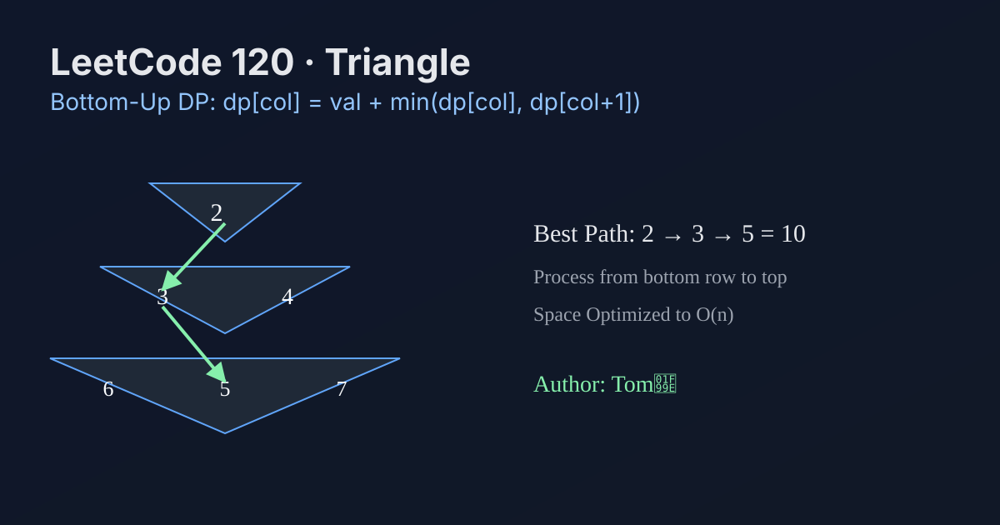

LeetCode 120: Triangle (Bottom-Up Dynamic Programming)
LeetCode 120Dynamic ProgrammingArrayToday we solve LeetCode 120 - Triangle.
Source: https://leetcode.com/problems/triangle/

English
Problem Summary
Given a triangle array, move from top to bottom by stepping to adjacent numbers in the next row. Return the minimum path sum.
Key Insight
Each cell only depends on two children below it, so compute from the last row upward. This turns global optimization into local min transitions.
Brute Force and Limitations
DFS tries both branches at each row, which is exponential in rows (O(2^n)) due to repeated subproblems.
Optimal Algorithm Steps (Bottom-Up DP)
1) Create a 1D array dp of size n+1 initialized to 0.
2) Iterate rows from bottom to top.
3) For each position (row, col), set dp[col] = triangle[row][col] + min(dp[col], dp[col+1]).
4) After processing row 0, dp[0] is the minimum total.
Complexity Analysis
Time: O(n^2) for all triangle cells.
Space: O(n) using compressed DP.
Common Pitfalls
- Updating top-down in-place can destroy needed child states.
- Using wrong loop bounds (col must be 0..row).
- Forgetting that adjacent means col and col+1 only.
Reference Implementations (Java / Go / C++ / Python / JavaScript)
class Solution {
public int minimumTotal(List<List<Integer>> triangle) {
int n = triangle.size();
int[] dp = new int[n + 1];
for (int row = n - 1; row >= 0; row--) {
for (int col = 0; col <= row; col++) {
dp[col] = triangle.get(row).get(col) + Math.min(dp[col], dp[col + 1]);
}
}
return dp[0];
}
}func minimumTotal(triangle [][]int) int {
n := len(triangle)
dp := make([]int, n+1)
for row := n - 1; row >= 0; row-- {
for col := 0; col <= row; col++ {
if dp[col] < dp[col+1] {
dp[col] = triangle[row][col] + dp[col]
} else {
dp[col] = triangle[row][col] + dp[col+1]
}
}
}
return dp[0]
}class Solution {
public:
int minimumTotal(vector<vector<int>>& triangle) {
int n = (int)triangle.size();
vector<int> dp(n + 1, 0);
for (int row = n - 1; row >= 0; --row) {
for (int col = 0; col <= row; ++col) {
dp[col] = triangle[row][col] + min(dp[col], dp[col + 1]);
}
}
return dp[0];
}
};class Solution:
def minimumTotal(self, triangle: List[List[int]]) -> int:
n = len(triangle)
dp = [0] * (n + 1)
for row in range(n - 1, -1, -1):
for col in range(row + 1):
dp[col] = triangle[row][col] + min(dp[col], dp[col + 1])
return dp[0]var minimumTotal = function(triangle) {
const n = triangle.length;
const dp = new Array(n + 1).fill(0);
for (let row = n - 1; row >= 0; row--) {
for (let col = 0; col <= row; col++) {
dp[col] = triangle[row][col] + Math.min(dp[col], dp[col + 1]);
}
}
return dp[0];
};中文
题目概述
给定一个三角形数组，从顶部到底部，每一步只能走到下一行相邻位置，求路径最小和。
核心思路
每个位置只依赖下一行的两个“孩子”，因此可以从底向上做动态规划，把全局最优拆成局部最优转移。
基线解法与不足
暴力 DFS 每层分叉两条路，重复子问题很多，复杂度近似 O(2^n)，行数稍大就会超时。
最优算法步骤（自底向上 DP）
1）准备长度 n+1 的一维数组 dp，初始全 0。
2）从最后一行向上遍历。
3）在位置 (row, col) 执行转移：dp[col] = triangle[row][col] + min(dp[col], dp[col+1])。
4）处理到第 0 行后，dp[0] 就是最小路径和。
复杂度分析
时间复杂度：O(n^2)（遍历所有三角形元素）。
空间复杂度：O(n)（状态压缩）。
常见陷阱
- 若从上到下原地更新，可能覆盖后续还要用的状态。
- 列循环边界写错，必须是 0..row。
- “相邻”不是任意下一行位置，只能是 col 或 col+1。
多语言参考实现（Java / Go / C++ / Python / JavaScript）
class Solution {
public int minimumTotal(List<List<Integer>> triangle) {
int n = triangle.size();
int[] dp = new int[n + 1];
for (int row = n - 1; row >= 0; row--) {
for (int col = 0; col <= row; col++) {
dp[col] = triangle.get(row).get(col) + Math.min(dp[col], dp[col + 1]);
}
}
return dp[0];
}
}func minimumTotal(triangle [][]int) int {
n := len(triangle)
dp := make([]int, n+1)
for row := n - 1; row >= 0; row-- {
for col := 0; col <= row; col++ {
if dp[col] < dp[col+1] {
dp[col] = triangle[row][col] + dp[col]
} else {
dp[col] = triangle[row][col] + dp[col+1]
}
}
}
return dp[0]
}class Solution {
public:
int minimumTotal(vector<vector<int>>& triangle) {
int n = (int)triangle.size();
vector<int> dp(n + 1, 0);
for (int row = n - 1; row >= 0; --row) {
for (int col = 0; col <= row; ++col) {
dp[col] = triangle[row][col] + min(dp[col], dp[col + 1]);
}
}
return dp[0];
}
};class Solution:
def minimumTotal(self, triangle: List[List[int]]) -> int:
n = len(triangle)
dp = [0] * (n + 1)
for row in range(n - 1, -1, -1):
for col in range(row + 1):
dp[col] = triangle[row][col] + min(dp[col], dp[col + 1])
return dp[0]var minimumTotal = function(triangle) {
const n = triangle.length;
const dp = new Array(n + 1).fill(0);
for (let row = n - 1; row >= 0; row--) {
for (let col = 0; col <= row; col++) {
dp[col] = triangle[row][col] + Math.min(dp[col], dp[col + 1]);
}
}
return dp[0];
};
Comments